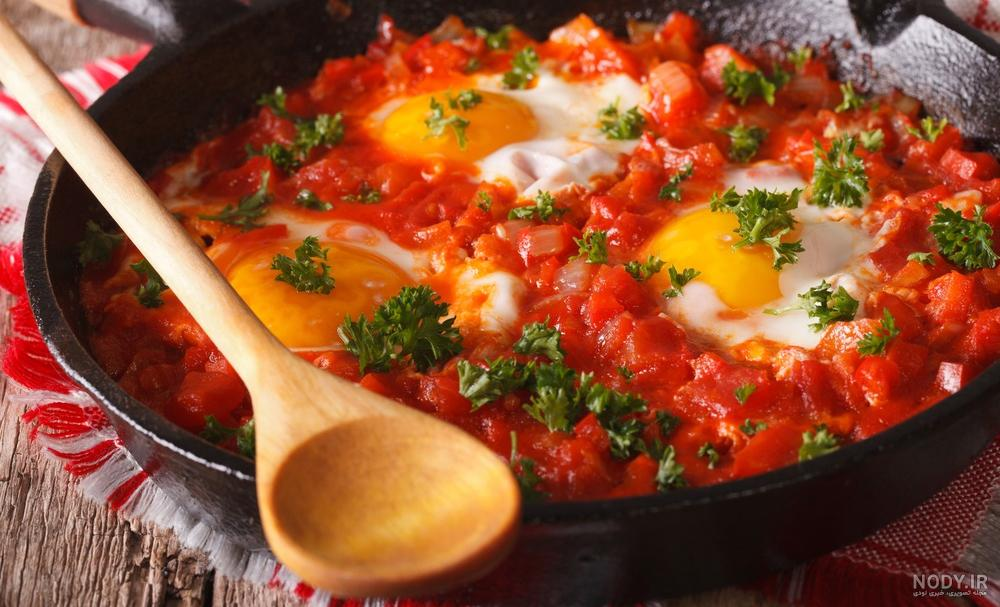

املت (به فرانسوی: Omelette)، خوراکی است که مادهٔ اصلی آن تخممرغ است. در تهیه املت میبایست تخم مرغ همزده را با هر ماده دلخواه دیگر مخلوط نمود و گاهی هم آن را تا کرد اما در ایران تنها به مخلوط تخم مرغ و گوجه یا رُب گوجه املت گفته میشود که برای تهیهٔ آن در ماهیتابه روغن یا کره و رب گوجه میریزند. گاهی هم به از ترکیب رب و گوجه فرنگی پوره شده استفاده میشود تا املت گوجه فرنگی ربی به دست بیاید. وقتی روغن با رب داغ شد تخممرغهای همزده شده را به آن اضافه میکنند و گاهی تخم مرغ را بعد از اضافه کردن به رب مخلوط میکنند. در دستور پخت اصلی املت آماده را تا میکنند و داخل آن سبزیجات، پنیر، گوشت (اغلب ژامبون یا بیکن) پخته شده یا ترکیبی از آنها را قرار میدهند. برای این که املت سبک و پفکی شود گاهی به سفیده تخممرغ که جداگانه همزده شده (یا تمام تخممرغ همزده شده) شیر، خامه یا حتی آب میافزایند. با این روش در مایع اولیه حبابهایی ایجاد میشود. چون تخممرغ به سرعت پخته میشود، حبابها درون آن حبس میشوند و بافتی نرم و سبک به املت میدهند. املت (گوجه تخممرغ) در شهرهای مختلف ایران به واسطه چای خانههای معروف وارد بازار و معرفی گردید. نوع ایرانی املت با نام خاگینه نیز در برخی مناطق کشور تهیه و طبخ میشود که به آن شکر نیز اضافه میکنند. دستور پخت املت در کشورهای مختلف کمی متفاوت است، بهطور مثال املت مکزیکی کمی متفاوت تر از املت ایرانی میباشد. منبع